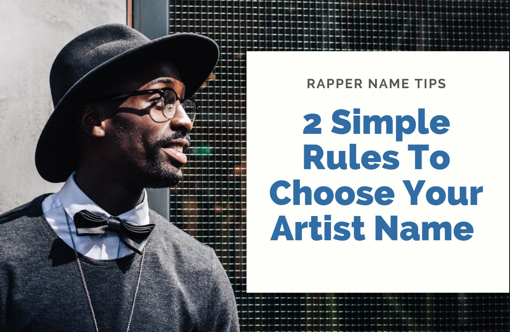

Here, in this blog, we'll talk about an idea of having an artist name, the reason I want to address this, is because I recieved tons of queries from artists. Recently a rapper called O'Skoo messaged me that he is trying to figure out if he should use his real name Jean or O'Skoo
My answer to Jean was I don't know. becuase its you who knows your work better than any one else. No one but you are the one that can decide the best name for yourself as an Artist
Alot of artists use Monikers that are not their real name eg: a very famoueKaws, Brian Donnelly is his real name.
Similarly El , Dread Hyro all of these use monikers.
Alot of artists also use their real names as well like Anna Charney & Jordan Casteel
In my opinion, it doesn't matter if you go with your real name or a Moniker, what matters is your name should go with your style, it should touch your target audience in a way that they feel that you are amongst them.
You should never be so obsessed with your artist name, instead you should focus more on our Art coz its your work that defines you and not the name itself
This doesn't mean that I am saying to just go and pick a random word from the Japanese dictionaty and use it as your name. Obviously, you should be picky as the name would go along with you when you gain some eyes.

As I mentioned, I am not a big fan of stressing too much about your rap name, you can use rap name generators to name your rapper name but if you want to do it manually here are my 2 simple rules to choose your rapper name:
When you are starting out as an Artist, you may not be worried too much about the competition but as you scale and people start searching your name on google or on social media, you should be the only one with your name coz the last thing you want as an artist is to have your fans land on someone else's profile when they are searching for you.
This doesn't mean that you have to be unique to an extent with no one in the planet shares your name but atleast try to be the only one in the industry.
eg: if you are photographer, your shouldn't name yourself Thomas Evan, as Thomas Evan is a famous photographer in New York, the same goes with every industry.
Another important reason of being unique is the digital world. You should check for domain name availablity before finalizing your name, a quick google search will confirm if you have a name twin in the industry.
My 2nd rule of choosing a rap name is to be very cautious with the word selection coz the name you are going to choose will be your second identity. You should havev something that you can build a brand around it and it should be completely different from your personal life.
You should be tied to your artist name as if its the only identity you will have in your professional life. Once you gain populatiry, all these marketing agencies and advertisers will be printing your artist name on their profiles, they won't liek to have a cocky name on their brouchers
Anything offensive in your name like titty, guns, murderer will be a huge drawback for you as reputed companies won't like to work with someone that might hurt their reputation.